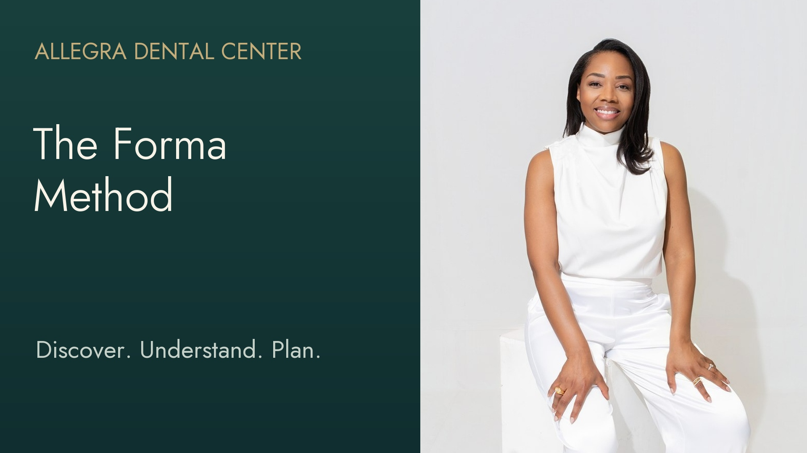
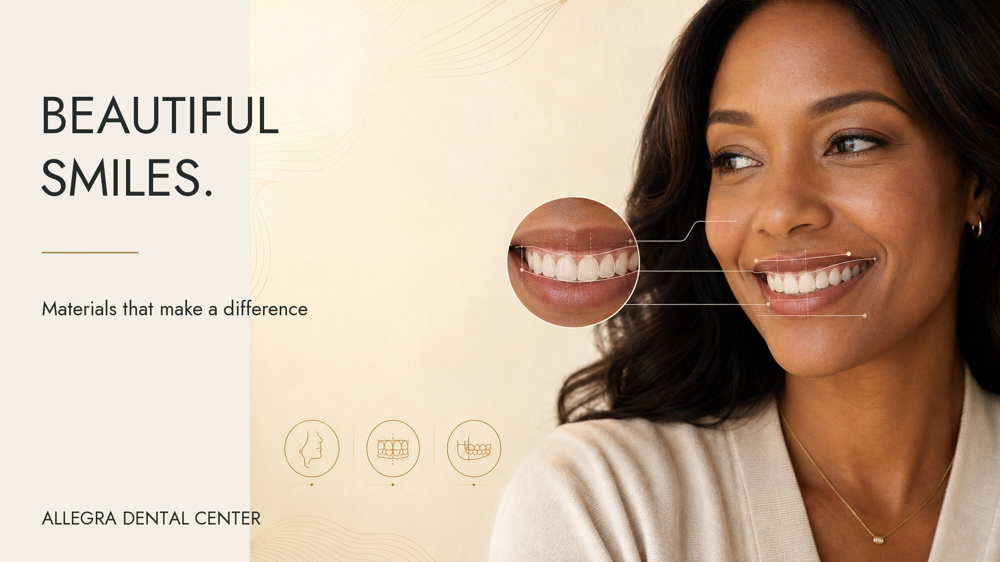
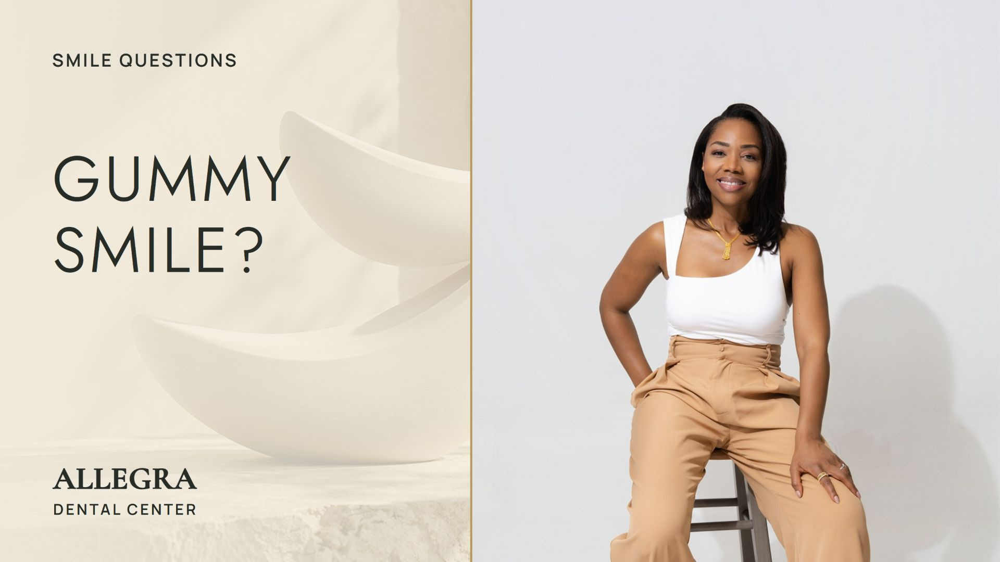
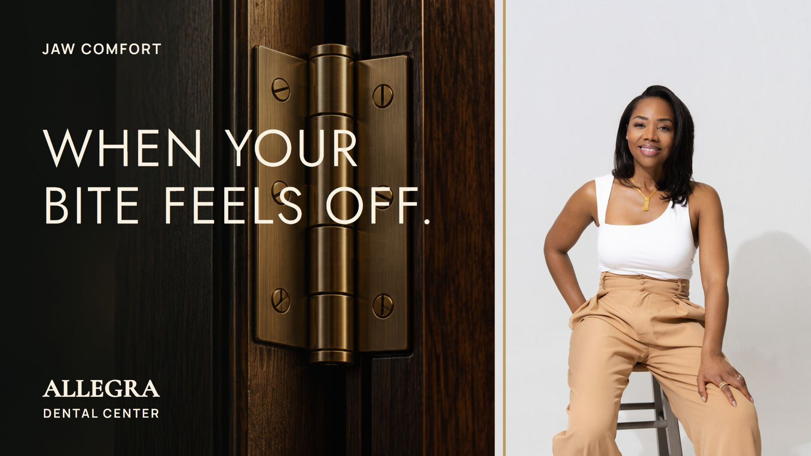

Allegra Dental Center / 17 topic films + 1 flagship
A fuller picture.
A more personal experience.
Explore the five-minute Forma Method experience and 17 focused films, with thoughtful imagery and a varied instrumental score.

The flagship / 5 minutes
The Forma Method
Discover. Understand. Plan.
A fuller picture of your health, in one thoughtful conversation.
What Can Your Mouth Reveal About Your Health?
Ambient piano + strings
Jaw Pain: 5 Common Causes Your Dentist Checks
Soft strings
Bonding vs. Veneers: Repair, Stains and Wear
Strings + lo-fi
 1:40
1:40Choosing a Dentist? What You Should Be Able to Expect
Light piano + fiddle
Chipped Teeth or Small Gaps: Could Bonding Help?
Strings + lo-fi

0:26Bonding or Veneers: Which Fits Your Smile Goals?
Ambient piano + strings
 0:38
0:38What to Expect From a Forma Method Consultation
Ambient piano + strings
 1:08
1:08Your First Visit to Allegra Dental Center: A Welcome From Dr. Dickson
Light piano + fiddle
 1:25
1:25Before Veneers: What Makes a Smile Look Natural?
Soft strings
 2:46
2:46The Forma Method: From Dental Findings to a Clear Plan
Ambient piano + strings

0:43Gummy Smile? Why the Cause Changes the Treatment
Approved imagery and score; refined transitions.
5 Invisalign Habits to Keep Your Treatment on Track
Strings + lo-fi
 0:23
0:23Can Dental Laser Care Help a Painful Canker Sore?
Soft strings
Smile Design Starts With Listening to You
Light piano + fiddle
 1:05
1:05Beyond Cavities: What Else Should a Dentist Consider?
Ambient piano + strings

1:47Jaw Discomfort: Why Dr. Dickson Checks Your Bite
Soft strings
 0:44
0:44Cold Sore Starting? Ask About Dental Laser Care
Soft strings
No films match that search.
About the imagery
The doctors are shown in their original recorded performances, with the previously approved appearance and presentation. Added illustrative scenes include AI-generated people, smiles and objects, plus existing generated films. They are not actual Allegra Dental Center patients, practice equipment or treatment outcomes.
The team photos and cover photography are from the approved dedicated photo collection. Please have the doctors confirm the suitability of any dental anatomy examples before release.
Music & review notes
Music: “A Moment” by Leonardo Calvo, LoFi Strings Music Pack; “Reverie” and “Simplicity” by Scott Buckley, scottbuckley.com.au. Released under CC BY 4.0. Tracks and supplied stems are trimmed, mixed, looped or crossfaded beneath the original dialogue. Each film’s selected score is listed on its page.
This is a review collection. Public YouTube uploads remain unchanged. Captions are review drafts checked against the original narration and existing transcripts.